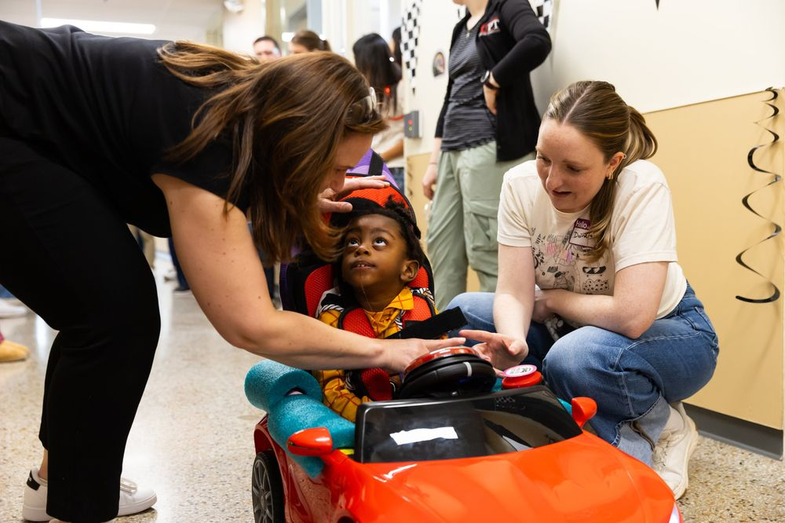

Volunteer
We welcome community volunteers of all backgrounds at our build events. No special skills are required, just enthusiasm and a willingness to help! Build and assemble cars, support families on Build Day, and spread the word.
Sign Up to Volunteer →